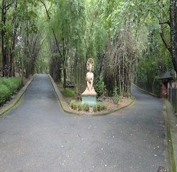
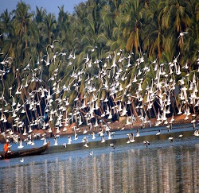
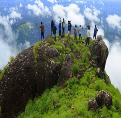

Nilambur teak is widely sought after for its properties. It is known for its durability, earthy colour, and size. The wood is also resistant to fungal decay and is rich in antioxidants making it ideal for construction purposes.
Read moreKadalundi is a village in Kozhikode district, Kerala, India. It is a coastal village close to the Arabian Sea. Kadalundi is famous for its bird sanctuary, which is home to various migratory birds during certain seasons and has been recently declared as a bio-reserve. It is the first community reserve in Kerala.
Read moreKodikuthimala also known as the Ooty of Malappuram is a hill station in the Malappuram district of Kerala in India. Located in Vettathur and Thazhekode villages, at a height of 522 m above sea level, this is the highest geographic peak in Amminikkadan hills.
Read more